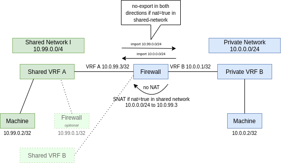
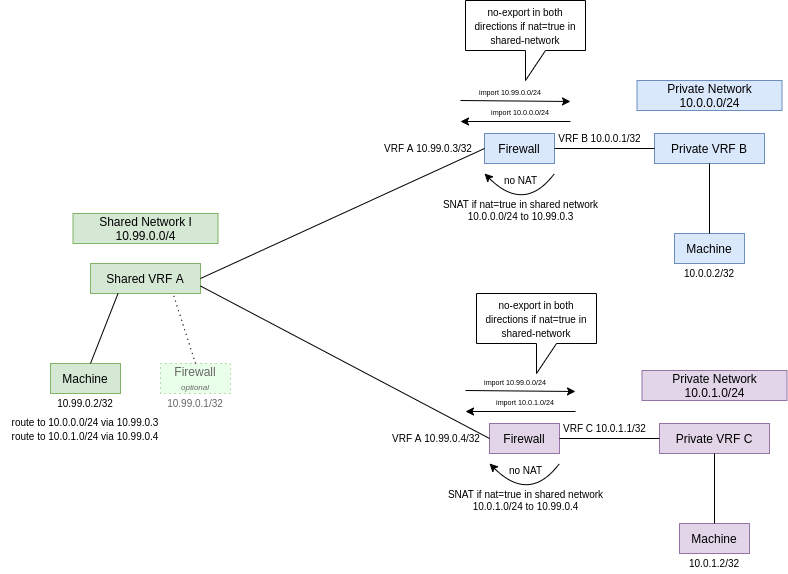

Shared Networks
Why are shared networks needed
For special purpose machines that serve shared services with performance critical workloads to all machines of a partition (like persistent storage) it would be good to have kind of a "shared network" that is easily accessible. They do not necessarily need another firewall. This would avoid having two firewalls in the datapath between a machine in a private network and the machines of a shared service.
Constraints that need to hold
- a shared network is usable from all machines that have a firewall in front, that uses it
- a shared network is only usable within a single partition (currently we are constrained in bandwidth and have no routing of 10.0.0.0/8 addresses btw. partitions and failure domain should be the partition but this constraint might get lifted in the future)
- networks may be marked as shared after network allocation (but there should be no way back from shared to unshared)
- neither machines nor firewalls may have multiple private, unshared networks configured
- machines must have a single primary network configured
- this might be a shared network
- OR a plain, unshared private network
- firewalls may participate in multiple shared networks
- machines can be allocated with a primary network using auto IP allocation or with
noautoand a specific IP
Should shared networks be private
Alternative 1: If we implemented shared networks by extending functions around plain, private networks we would not have to manage another CIDR (mini point) and it would be possible to create a k8s cluster with a private network, mark the network as shared and produce shared services from this k8s cluster.
Alternative 2: If shared networks are implemented as first class networks we could customize the VRF and also accomplish an other goal of our roadmap: being able to create machines directly in an external network.
Together with @majst01 and @Gerrit91 we decided to continue to implement Alternative 1.
Firewalls accessing a shared network
Firewalls that access shared networks need to:
- hide the private network behind an ip address of the shared network if the shared network was configured with
nat=true. - import the prefixes of the shared VRF to the private VRF and import the prefixes of the private VRF to the shared VRF so that the communication between the two is working in both directions. As long as no
nat=truewas set on the shared VRF, the original machine ips are visible in both communication directions.
Setup with shared networks and single consumer

Setup with single shared network and multiple consumers

Getting internet access
Machines contained in a shared network can access the internet with different scenarios:
- if they have an own firewall: this is internet accessibility, as common (check whether all traffic gets routed through it!)
- if they don't have an own firewall, an external HTTP proxy is needed that has an endpoint exposed as Service Type NodePort